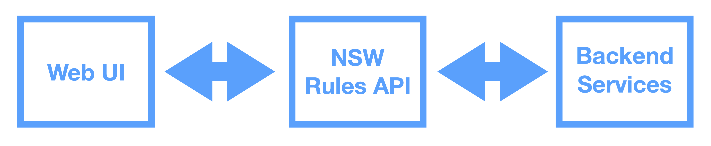

Rules as Code
What it means, and why we're doing it
Sara Falamaki and Asghar Kazi
Why Code The Rules?
Every computer system that interacts with rules, codes them
Lets do it once
So that everyone uses the same rules
Often the interaction between rules is incomprehensible to mere humans...

Lets do it better
- By explaining our rules to a stupid computer, we can help ensure they make sense
- Rules and computer systems become easier to integrate with, test, and modify
- By reducing the burden of legislation, we improve our customer's experience
We promise to
- Make life better
- Save Money!
- Save Effort
- Help make better rules
... for both our customers and staff
What are we doing?
- Manually translating prescriptive rules into computer code
- Publishing this translation, so computer systems can use it
- Testing our interpretation of the rules with clear, reproducible test data
What are we NOT doing?
AI
Machine Learning
Law, equity, judgements
RoboCops
RoboJudges
RoboDebt
Automatic Anything
... Anything scary!
Rules as Code is here TODAY
- BRD - Community Gaming
- ESS - NABERS
- Many examples in New Zealand, France, Tunisia and Canada
What does it look like?
This is a questionaire that can be used to determine what financial help you're eligible for in New Zealand, created using Rules As Code
Commbank's Benefits Search
Commbank's Benefits Search
Our Approach
We aim to make Rules as Code the easiest approach for drafting, consulting, implementing and communicating prescriptive rules and legislation.
We are building a RaC platform for NSW
We Are Exploring New Opportunities
- BDM - Marriages
- Revenue - Land Tax, Fines, Speed cameras
- SIRA - Workers Compensation
How does it work?
- Choose legislation to translate, or co-author new legislation
- Concept Modelling
- Code Concepts
- Test understanding and code with test scenarios
- Deploy API, and integrate services with it
Encode Business Rules for COVID19 Recovery
The Criteria
The Corresponding Code
Test Case 1
- name: Organisation is conducting a charity housie that is permitted
period: 2020-07
input:
is_charity: True
gaming_activity_is_charity_housie: True
proceeds_to_benefitting_organisation: 3900
gross_proceeds_from_gaming_activity: 4000
total_expenses_for_conducting_gaming_activity: 100
total_prize_value_from_single_gaming_session: 2000
number_of_tickets: 40
output:
charity_housie__game_meets_criteria: True
charity_housie__authority_required: False
Good Candidates for RaC
Are rules/regulations/policies that:
- Are used by other organisations, agencies or partners
- Change frequently or programmatically
- Create the most queries from customers
- Are about to be drafted